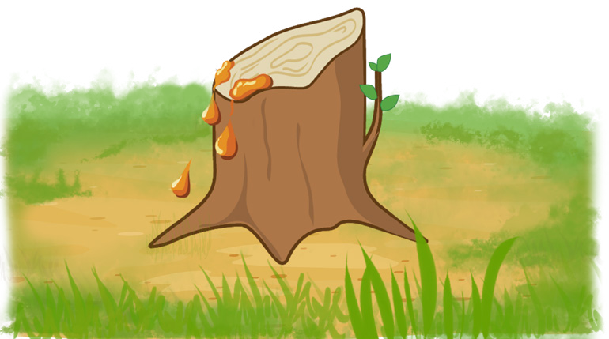
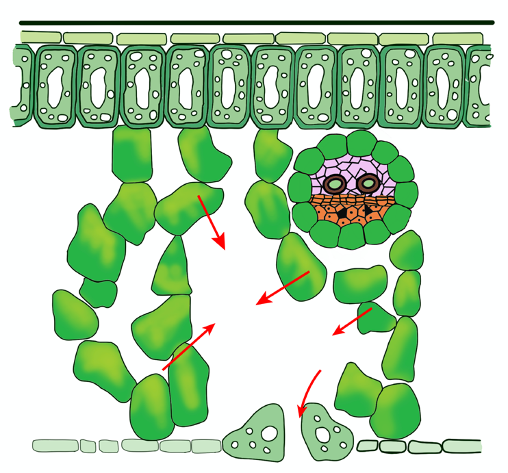

88
Student’s Book - Form Two
Biology for Secondary Schools
Question
What caused the differences in the levels of water observed in the three tubes?
Root pressure
Root pressure pushes water and dissolved mineral salts upwards from the root. This happens because the cells of the endodermis push mineral salts into the xylem. This increases osmotic pressure in the xylem thereby creating a force that moves the water and dissolved mineral salts up the
xylem vessel. When a plant is cut, sap oozes out from the remaining stem or stump, as shown in Figure 4.16. This is proof that root pressure drives the fluid upward through the xylem vessels.

Fluid droplet
Stump
Figure 4.16: Sap oozing from stump
Transpiration
Transpiration is a process by which plants lose water through the stomata in the leaves.
Water flows from the roots to the leaves through the xylem vessels. It enters the spongy mesophyll of the leaf by osmosis. The spongy mesophyll has substomatal air spaces in which water enters in the form of water vapour. As a result, the concentration of water vapour in the substomatal air spaces becomes higher than the concentration of water vapour in the air. This causes water to diffuse into the atmosphere through the stomata (Figure 4.17).

Cuticle
Upper epidermis
Xylem
Phloem
Vascular bundle
Lower epidermis
Cuticle
Guard cell
Stomata pore
Palisade layer
Spongy mesophyll
Air space
Figure 4.17: Movement of water through the leaves
08/04/2026 10:18:26